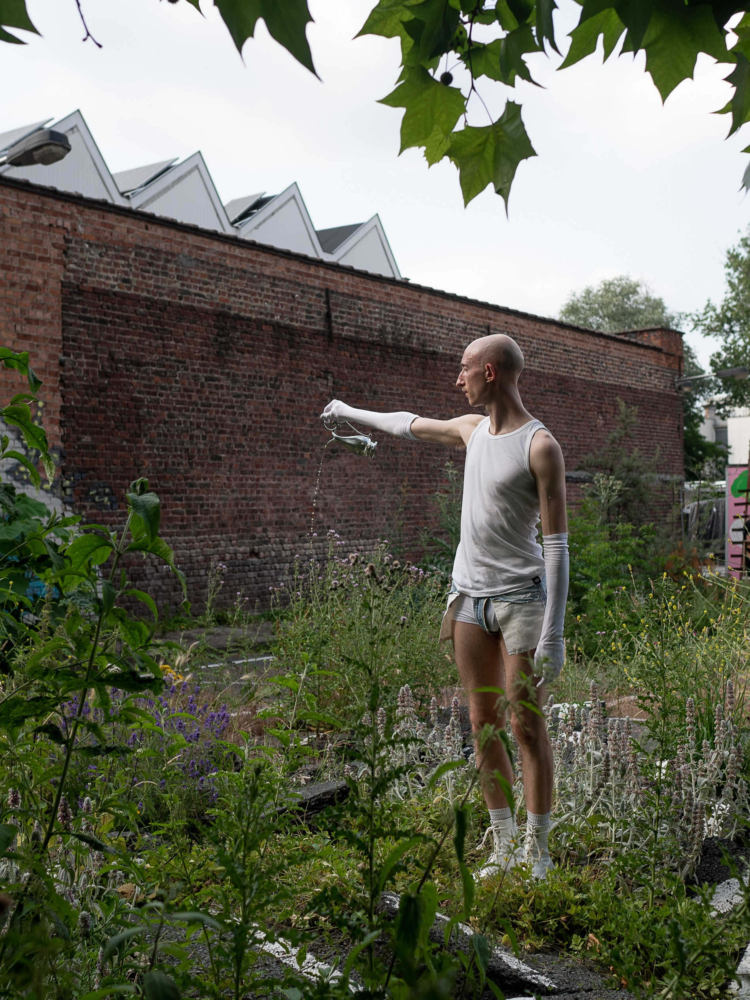
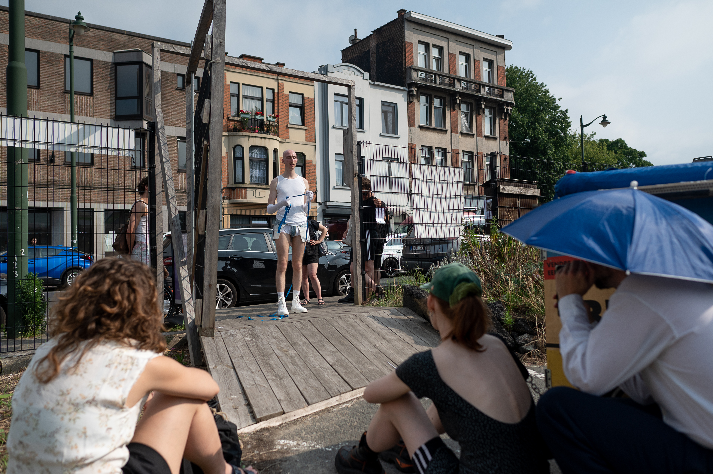
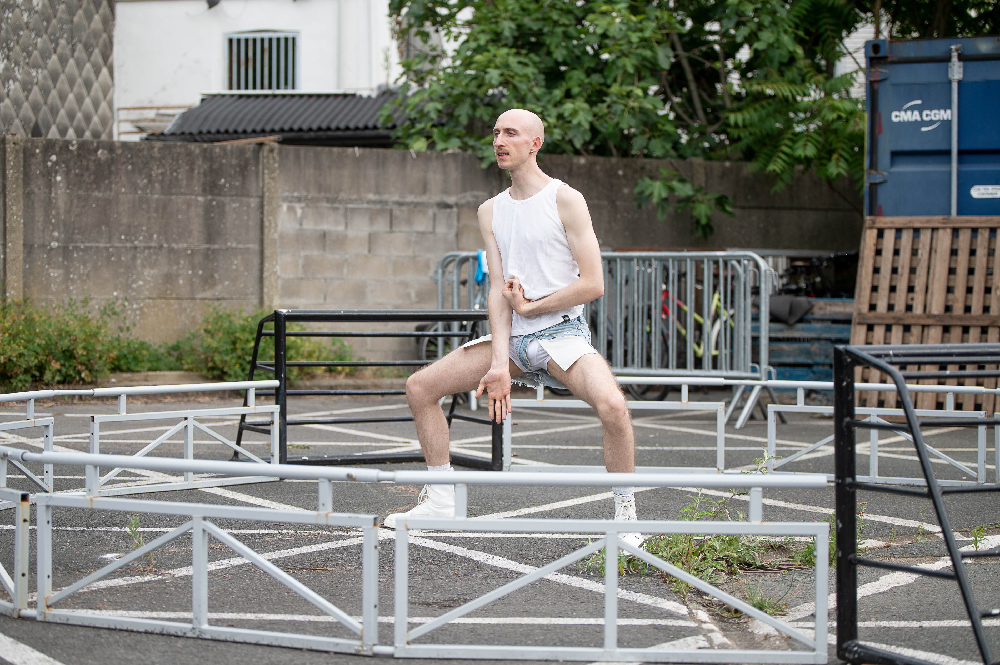
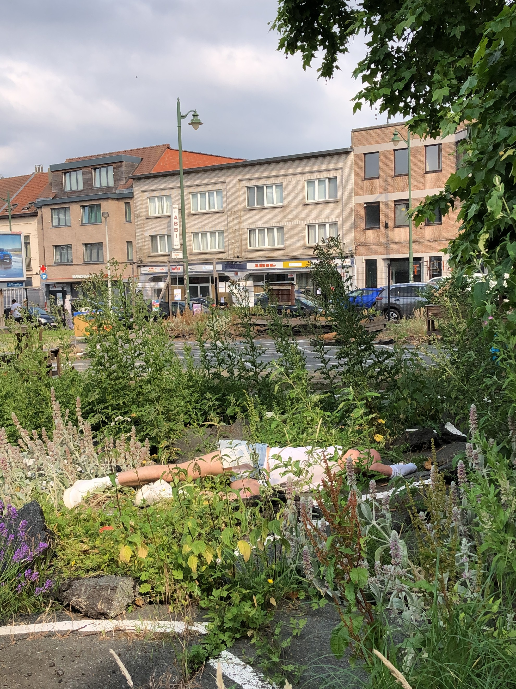

Duel: You (Already) Lost
Duel: You (Already) Lost explores body and linguistic limits, sparked by urine. In the peculiar space of Bizet Bizar, for the Blue Bench project, in June 2025, this already-lost duel probes what urine is and does. The performance unfolds as a series of notes on this fluid—until urine prevails.
1. Fighting the urge to pee.
2. Exhausting binary relations. In the end, only one remains: urine.
3. Recycling yourself.
1. 2. 3. You (Already) Lost.
Pressed, urgent, and definitely can’t hold it any longer. The bodily
sensations of needing to urinate — uncomfortable, familiar, and
inevitable — are something we all deal with sooner or later in public space. But beyond the physical
urgency, these sensations also speak to the need to shed stigma and contradiction around bodies in
discomfort.
Val, a designer, artist, and researcher, confronted exactly that in their performance Duel: You (Already) Lost told in three chapters.
In each, the body in need and in pain was placed in plain sight — no more hiding. In the first
part Val shared a choreography that gave shape to inner pressure: intimate curling, crouching, and
shifting, as the body exteriorized an internal motive. In the second chapter, a list of contradictions unfolded — handwritten along
a blue ribbon — stretched and returned between the street and the blue bench.
Finally: release. Fluid. Societal expectations. The last drops of shame, with pleasure returned to the soil. The cycle resets.
——— Text by Gilles Hellemans (artist and curator of the Blue Bench project)
Pictures by Dániel Mátyás Fülöp and Léonie Montjarret Benoit.



